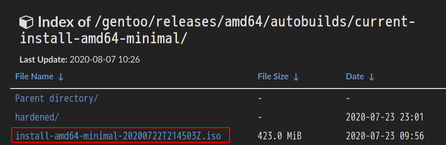
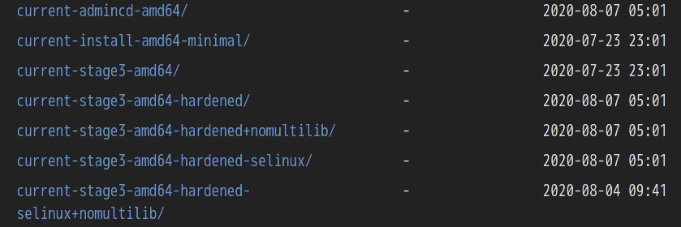
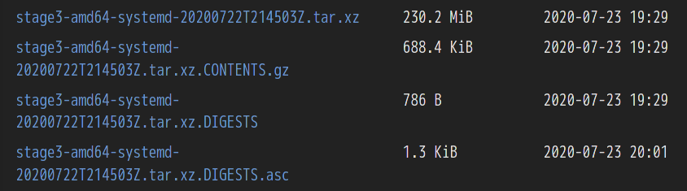

Gentoo 基本系统安装
本文介绍 gentoo 基本系统的一般安装流程。图形界面的安装配置将在后面的文章中介绍。
刻录 gentoo 安装镜像
访问清华大学开源软件镜像站。选择合适的架构，下载 gentoo 安装镜像。

虚拟机不需要刻录。u 盘的刻录步骤很简单，不再赘述。
开启网络与 ssh
- 有线网卡与虚拟机
直接dhcpcd即可
- wifi
# 查看无限网卡名称及状态
ip a
# 若无限网卡未打开，则开启
ip link set interface_name up
# 查看可用的wifi
# 建议直接从其他设备上查看wifi名称，不必从本地扫描搜索
# 生成wifi配置
wpa_passphrase 网络 密码 > 文件
# 连接wifi
wpa_supplicant -c 文件 -i 接口 &
# 自动分配ip地址
dhcpcd &- 开启 ssh
# 开启ssh
/etc/init.d/sshd start
# 设置livecd密码
passwd
# 注意远程连接时用户名不是livecd，而是root磁盘分区
详见
由于此处分配分区将牵扯到后面 fstab 的配置，如果你对此完全不了解，建议按最常规的方式划分。如果你有一台现成的 linux，可以仿照其分区，可以帮助后面配置 fstab。
另外参考你的电脑配置。内存与交换空间之和（单位 G）最好大于 CPU 总线程数。
以下是 GPT 格式分区，引导方式为 EFI。
fdisk -l
# 注意以下磁盘名nvme0n1，对于不同规格的硬盘不同
fdisk /dev/nvme0n1
g
# 分区，具体操作略
w
# 注意以下分区格式将关系到部分软件，尤其是grub的安装配置。因此必须慎重选择。
# 制作引导分区
mkfs.fat -F32 /dev/nvme0n1p1
# 制作主分区
mkfs.ext4 /dev/nvme0n1p2
# 制作交换分区
mkswap /dev/nvme0n1p3
# 启用交换
swapon /dev/nvme0n1p3分区完毕后将主分区挂在到 livecd 提供的挂载点上。
mount /dev/nvme0n1p2 /mnt/gentoo获取基础编译环境
上述步骤已经为 gentoo 系统开辟了空间，下面将正式进入系统的编译安装阶段。
由于 gentoo livecd 并不携带完整的编译环境，因此我们需要先往系统空间中放一个现成的编译环境，即 gentoo 基础编译环境。
再次访问清华镜像站。
Gentoo 的 stage3 包囊括了整套编译环境以及绝大多数 gentoo 基础工具。

Gentoo stage3 包的类型包括但不限于以上几种。根据你所需要的桌面环境，查看其对应的 gentoo wiki，做出选择。其中无 systemd 表示使用 OpenRC。nomultilib 表示仅支持 64 位，一般不建议选择。
本教程以 systemd kde 为例，因此选择下载以下几个包至/mnt/gentoo。

下载完毕后使用sha512sum -c stage3-amd64-*.tar.xz.DIGESTS校验文件，出现两个 ok 和两个 failed 为正常。并继续使用tar xpvf stage3-*.tar.xz --xattrs-include='*.*' --numeric-owner解压文件。
设置编译选项
配置/mnt/gentoo/etc/portage/make.conf。
这是整个安装过程中最核心、最重要的一步。详情参考Gentoo wiki以及gentoo doc。
此处不再对大部分配置进行说明，仅给出笔者第一次安装 gentoo 时的配置（虽不完美，但在当时不存在错误）。只可参考，不可照抄。
COMMON_FLAGS="-march=native -O2 -pipe"
CFLAGS="${COMMON_FLAGS}"
CXXFLAGS="${COMMON_FLAGS}"
FCFLAGS="${COMMON_FLAGS}"
FFLAGS="${COMMON_FLAGS}"
CHOST="x86_64-pc-linux-gnu"
CONFIG_PROTECT="/var/bind"
PORTDIR="/var/db/repos/gentoo"
DISTDIR="/var/cache/distfiles"
PKGDIR="/var/cache/binpkgs"
LC_MESSAGES=C
MAKEOPTS="-j8"
GENTOO_MIRRORS="https://mirrors.tuna.tsinghua.edu.cn/gentoo"
PORTAGE_TMPDIR="/var/tmp"
DISTDIR=/var/gentoo/distfiles
ACCEPT_LICENSE="*"
VIDEO_CARDS="radeon"
L10N="en_US en zh zh_CN"
LINGUAS="en-US zh-CN en zh"
AUTO_CLEAN="yes"
GRUB_PLATFORMS="efi-64"
EMERGE_DEFAULT_OPTS="--with-bdeps=y --ask --verbose=y --load-average --keep-going"
INPUT_DEVICES="libinput synaptics evdev"
USE="X alsa clang udev dbus polkit udisks vulkan vdpau vaapi glamor nls"
KEYWORDS="amd64"下面对其中的几个选项做简略介绍。
GENTOO_MIRRORS：建议选清华源。虽然清华源的速度中规中矩，时不时还出点问题。但 gentoo 在中国境内的源很少，应该也只有清华源在及时更新。
EMERGE_DEFAULT_OPTS：建议添加，可大大减小 emerge 指令长度。
INPUT_DEVICES：绝不可缺。否则会引起键盘、觸控板、鼠标失效等等问题。
KEYWORDS：不要在这里开启测试分支。
MAKEOPTS：建议等于 CPU 线程数。这样计算机在编译软件时尚有余力编译另外的软件或者进行其他操作。
进一步配置
mkdir --parents /mnt/gentoo/etc/portage/repos.conf
cp /mnt/gentoo/usr/share/portage/config/repos.conf /mnt/gentoo/etc/portage/repos.conf/gentoo.conf
cp --dereference /etc/resolv.conf /mnt/gentoo/etc/修改/mnt/gentoo/etc/portage/repos.conf/gentoo.conf配置 portage 镜像源
sync-uri = rsync://mirrors.tuna.tsinghua.edu.cn/gentoo-portage进入新系统
- 挂载剩余文件系统
mount --types proc /proc /mnt/gentoo/proc
mount --rbind /sys /mnt/gentoo/sys
mount --make-rslave /mnt/gentoo/sys
mount --rbind /dev /mnt/gentoo/dev
mount --make-rslave /mnt/gentoo/dev- chroot 登陆新系统
chroot /mnt/gentoo /bin/bash
source /etc/profile
export PS1="(chroot) ${PS1}"- 挂载 boot 分区
mount /dev/nvme0n1p1 /boot配置 Portage
- 下载数据库快照
emerge-webrsync- 选择 profile
profile 简单的说就是一系列 USE flag 等配置的集合。这将是新系统的主体配置。
# 先列出可用的profile，带星号是目前选择的
eselect profile list
# 选择你需要的profile（可以从gentoo wiki获得信息）。这里选择kde桌面对应的profile
eselect profile set default/linux/amd64/17.1/desktop/plasma/systemd17.0 与 17.1 版本差距并不是非常大，如果不想深究，可以随意选择。
系统工具优化
所谓工欲善其事，必先利其器。因此在正式编译系统之前，先进行部分工具的完善。
编辑器
如果你不喜欢 stage3 中解压出来的 nano，可以优先安装一款自己喜欢的编辑器。
git
使用 git 同步 portage。
优点：大大提高同步速度。
缺点：略占用更多空间。
安装 git，不赘述。
修改当前系统的/etc/portage/repos.conf/gentoo.conf
[gentoo]
sync-type = git
sync-uri = https://github.com/gentoo-mirror/gentoo# 移除之前同步的portage
rm -rf /mnt/gentoo/var/db/repos/gentoo`
# 同步portage
`emerge --sync`gentoolkit
安装 gentoolkit，不赘述。
- 常用指令
# 查看已经enable的USE flag
euse -a -g或者euse -a -l
# 激活USE flag
euse -E flagname
# 关闭USE flag
euse -D flagname
# 注意不可单独使用euse -D或者euse -E。这将作用到所有的USE flag。
# 查看指定包的use标志
equery --nocolor uses =gnumeric-1.12.31
# 清理源代码
eclean-dist
# 清理二进制包
eclean-pkg- eclean 说明
默认情况下当前存储库中的任何 ebuild 相对应的源文件和二进制包都不会被删除。
可以通过同时使用 --deep 和 --package-names 选项指定删除当前存储库中 ebuild 对应的源文件和二进制包。
安装 layman
layman 是一个优秀的 gentoo overlay 管理工具。eix-sync 指令中也集成了layman -S指令。
详情见gentoo wiki。
- layman 安装
建议开启的 USE flag 有 git、sync-plugin-portage。
emerge --ask app-portage/layman
mkdir /etc/portage/repos.conf
layman-updater -R- 相关指令
layman -L # 显示存储库列表
layman -a <name> # 从本地列表添加存储库
layman -o <url of repository xml file> -f -a <name> # 添加非官方存储库
layman -d <name> # 删除存储库
layman -s <name> # 更新存储库
layman -S # 更新所有存储库安装 eix
详情见gentoo wiki。
eix 在教程的前面的内容中已经提及并作简要介绍。
- eix 安装
emerge app-portage/eix
eix-update
eix-sync使用eix-sync代替emerge --sync，可以在同步数据库后自动更新 eix 的缓存。
修改/etc/eix-sync.conf，写入*，以同步 ebuild 存储库。
- 相关指令
# 搜索包
eix name
# 搜索本地包
eix -I name
# 在软件包描述文件中搜索，-c用于输出紧凑的结果
eix -S -c name
# 在包类别中搜索
eix -C name
# 搜索许可证
eix -Cc games-rpg -L "EULA"
# 排除结果
eix --not -L "EULA"
# 搜索过时的包
eix-test-obsolete安装 ccache
ccache 原理是缓存编译时的中间结果，当重新编译时就可以大大减少编译时间。其应用场景主要为编译失败后修改配置，然后再次编译。此时之前编译的有效内容可以直接被利用，这部分将以极快的速度完成编译。但是第一次运行 ccache 时，会拖慢编译速度。
- ccache 安装
emerge --ask ccache
mkdir -p /var/cache/ccache
chown root:portage /var/cache/ccache/
chmod 2775 /var/cache/ccache/修改/etc/portage/make.conf。
FEATURES="ccache"
CCACHE_DIR="/var/cache/ccache"
CCACHE_SIZE="16G"开启 32 位库支持
Gentoo 官方并不建议使用纯 64 位模式。其最现实的原因是几乎无法改回兼容 32 位的模式。因此对于新手而言，强烈建议选择兼容 32 位的模式。
然而之前下载 stage3 包虽不是 nomultilib，但并不完全适配 32 位编译环境，需要手动修复。
emerge --ask --verbose db
# 编辑/etc/portage/package.use/abi_x86_32，写入
sys-libs/zlib abi_x86_32
# 编辑/etc/portage/make.conf，写入
ABI_X86="32 64"
emerge --ask --verbose zlib局域网编译与打包分发
Gentoo 可以联合局域网下的多台主机一起编译，也可以将本地编译好的包打包分发。
考虑到一般个人用户不太会用到这些功能，此处不赘述。详情见gentoo handbook，gentoo doc以及gentoo wiki。
配置时间和区域
时间与区域可以在之后配置，此处提前配置主要是为了方便某些 GFW 偷渡者。PS：这种东西很重要，甚至直接关系到能否成功安装，但得你自己想办法。
- 时区
echo Asia/Shanghai > /etc/timezone emerge --config sys-libs/timezone-data- 区域
# 生成中英文 locale.gen
echo 'zh_CN.UTF-8 UTF-8' >> /etc/locale.gen
echo 'en_US.UTF-8 UTF-8' >> /etc/locale.gen
locale-gen
# 列出可用的区域
eselect locale list
# 选择英文区域的编号
eselect locale set 3
# 重新加载环境变量
env-update && source /etc/profile && export PS1="(chroot) \${PS1}"
注意上述操作可能导致系统时间发生错误，可以手动纠正。但这可能导致/usr/bin/git 时间错误，致于无法安装 systemd。重装 git 可解决上述问题。
- 时间修正
# 查看时间是否正确
hwclock
date
date -s 2020/03/09
date -s 11:50:30
hwclock -w
# 自动更新，但此时暂不可用
timedatectl set-ntp true重新编译 gcc
为获取最适配本机的编译器，必须先配置并重新编译 gcc。即使你选择 clang 作为主编译器，也应当重新编译 gcc 的稳定分支。
警告：此处配置编译需要万分小心。一旦出现不当，损坏编译器，就会很麻烦。如果真的遇到这种情况，也无需慌张。通过直接安装已编译完成的正常的 gcc 二进制包救场即可。
- USE flag
根据需求配置，以下仅为参考。
fortran nls nptl openmp pch sanitize ssp lto- 编译 gcc
# 更新Portage
eix-sync
# 编译安装gcc
emerge --ask gcc
# 如果编译了新版本的gcc，继续进行下列操作。
# 查看可用gcc版本
gcc-config --list-profiles
# 选择新编译出来的gcc
gcc-config 2
source /etc/profile
export PS1="(chroot) ${PS1}"
emerge --ask --oneshot --usepkg=n sys-devel/libtool
# 检查当前gcc版本
gcc -v
# 如果需要拆卸旧版本
emerge --ask --depclean =sys-devel/gcc-9.3.0
# 验证系统完整性
revdep-rebuild
# 重新编译部分包
emerge --ask --oneshot --usepkg=n --verbose sys-devel/llvm sys-devel/clang
# 如果有问题可以重新构建系统
emerge --ask --emptytree --usepkg=n @system安装 clang
笔者使用 clang 作为主编译器。即使你使用 gcc 作为主编译器，也可以选择安装 clang 解决部分编译错误问题（这在Gentoo Compile Error Handling一文中已作介绍）。
重新编译整个系统。如果你不使用 clang 作为主编译器或者觉得没有必要，可以跳过此步。
emerge --ask --emptytree --usepkg=n @system更新配置
# 将数据库更新到最近一小时
eix-sync
emerge --oneshot sys-apps/portage至此，所有准备工作都已进行完毕。
更新@world
编译安装所有在配置中需要的软件。但在此之前，需要先安装内核源代码提供内核版本信息。
emerge sys-kernel/gentoo-sources
emerge --deep --with-bdeps=y --changed-use --update --ask --verbose --keep-going @world配置 fstab
fstab 简单的说就是系统启动时挂载文件系统的配置文件。
由 fstab 引起的常见错误有文件系统挂载为只读模式，无法写入任何文件等。
这里不介绍 fstab 的具体配置方法。有需要的参考gentoo wiki。
前面提到，如果有现成的 linux 系统，完全可以仿照其分区方式。主要就是为了 copy 现成的/etc/fstab。
比如获得的文件如下
UUID=e5bc0d97-ac5c-400c-b26e-137cefe6ae68 / ext4 rw,relatime 0 1
UUID=B320-B5C7 /boot vfat rw,relatime,fmask=0022,dmask=0022,codepage=437,iocharset=iso8859-1,shortname=mixed,utf8,errors=remount-ro 0 2
UUID=c4b396e5-cb87-42dc-b44e-4b26661e5cc0 none swap defaults 0 0使用blkid获取文件系统的 UUID，替换文件中的 UUID 即可。
内核编译
Gentoo 内核复杂点主要在于各选项的配置。此处不会介绍相关具体内容，只是提供一种投机取巧的方法。
具体的内核选项配置，参考gentoo wiki。
自动编译内核
自动编译内核会开启大部分选项。不过如果不是对性能与简洁有极致的要求，着实是可以接受的。
- 安装内核编译工具
emerge sys-kernel/genkernel- 选择内核版本
# 查看源代码列表
eselect kernel list
# 选择
eselect kernel set number- 自动编译内核
genkernel all手动编译内核
- 安装内核配置工具
emerge --ask sys-apps/pciutils- 查看功能
通过lsmod命令来查看当前所处的 Gentoo Live 镜像开启的功能，这可以作为我们在配置内核时的重要参考。
- 配置
# 进入源码菜单
cd /usr/src/linux
# 打开配置工具
make menuconfig按需求配置即可。
把上面所有必选项都配置好之后，选择 save 保存配置文件，然后 exit 退出。默认配置文件名是.config，但是最好手动复制一个备份，有时候默认名称的配置文件会莫名丢失，只能重头再配置一次。然后就可以开始编译和安装。
- 编译安装内核
make
make modules_install
make install- 投机取巧的方法
先自动编译内核，等到输出信息显示配置完毕后打断进程，进入源码菜单，修改配置文件即可。这至少将提供一份正确的配置方案，在此基础上修改将节省大量时间。
安装 firmware 和 initrampfs
emerge --ask sys-kernel/linux-firmware
# 如果是自动安装内核，则不需要下一步
genkernel --install initramfs配置系统
此处的系统配置基于 Systemd，如果你使用的是 OpenRC，部分配置将不适用。
网络配置
- 修改
/etc/hostname
设置主机名
yourname- 修改
/etc/hosts
# 定义的是现在系统，假设主机名为tux
127.0.0.1 localhost
::1 localhost
127.0.1.1 name.localdomain name- 网络工具的安装
如果你想在安装完毕基础系统后不再使用 livecd，就需要先安装基础网络工具。之后等桌面环境安装完毕后，最终将采用 NetworkManager 作为 wifi 配置连接工具。
emerge net-wireless/wpa_supplicant dhcpcd设置密码
passwd需要 8 字符及以上。
也可以修改/etc/pam.d/system-auth，将min=8,8,8,8,8 retry=3中所有的 8 改为 1。
部分系统工具的安装
- 日志工具
emerge --ask app-admin/syslog-ng
systemctl enable syslog-ng@default- 远程登录
systemctl enable sshd- 文件系统工具
emerge --ask sys-fs/dosfstools sys-fs/e2fsprogs添加用户
useradd -m -G users,wheel,audio -s /bin/bash username
passwd username # 需要三个单词，总长度大于8个字符磁盘清理
rm /stage3-*.tar.*安装系统引导器
- 安装 grub
emerge --ask --verbose sys-boot/grub:2- 将 grub 安装到系统中
注意如果你不是 efi 引导，需要修改下列命令。
grub-install --target=x86_64-efi --efi-directory=/boot
grub-mkconfig -o /boot/grub/grub.cfg安装配置 sudo
emerge --ask sudo
nvim /etc/sudoers
# 在root ALL=(ALL) ALL下添加新的用户配置 sshd
修改/etc/ssh/sshd_config，做以下修改。
Port 22
PermitRootLogin yes
PasswordAuthentication yes开启 SysRq
修改/etc/sysctl.conf。
kernel.sysrq = 1至此，Gentoo 基础系统已经安装完毕。退出 chroot，重启检查是否有误。